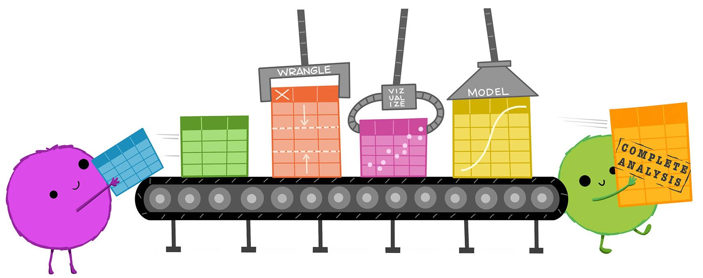
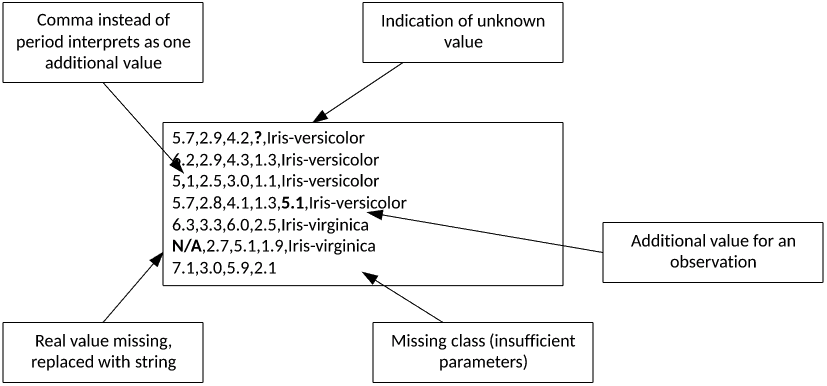
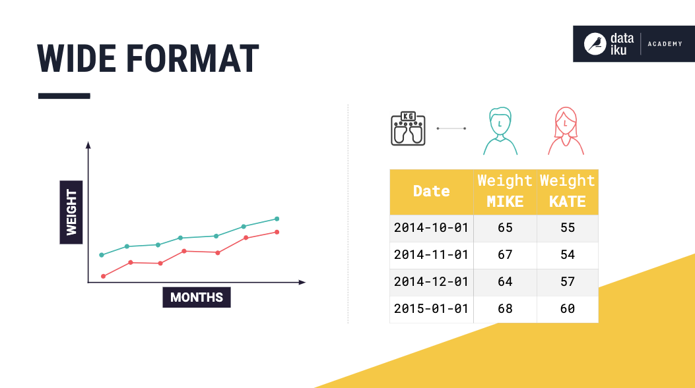
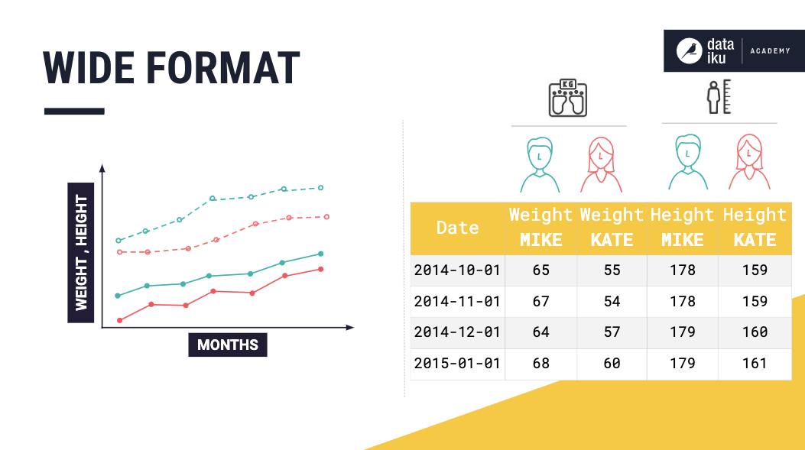
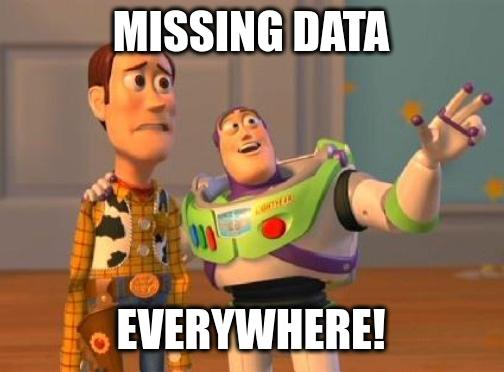
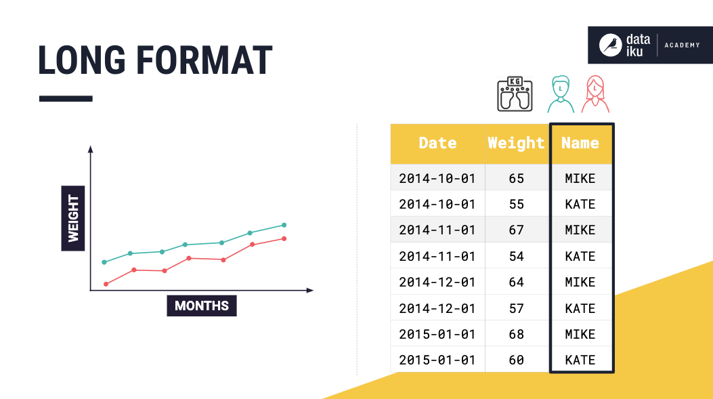
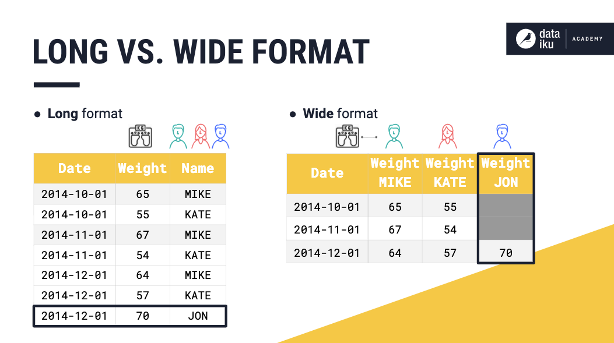
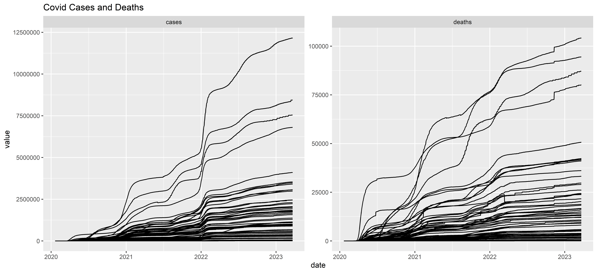
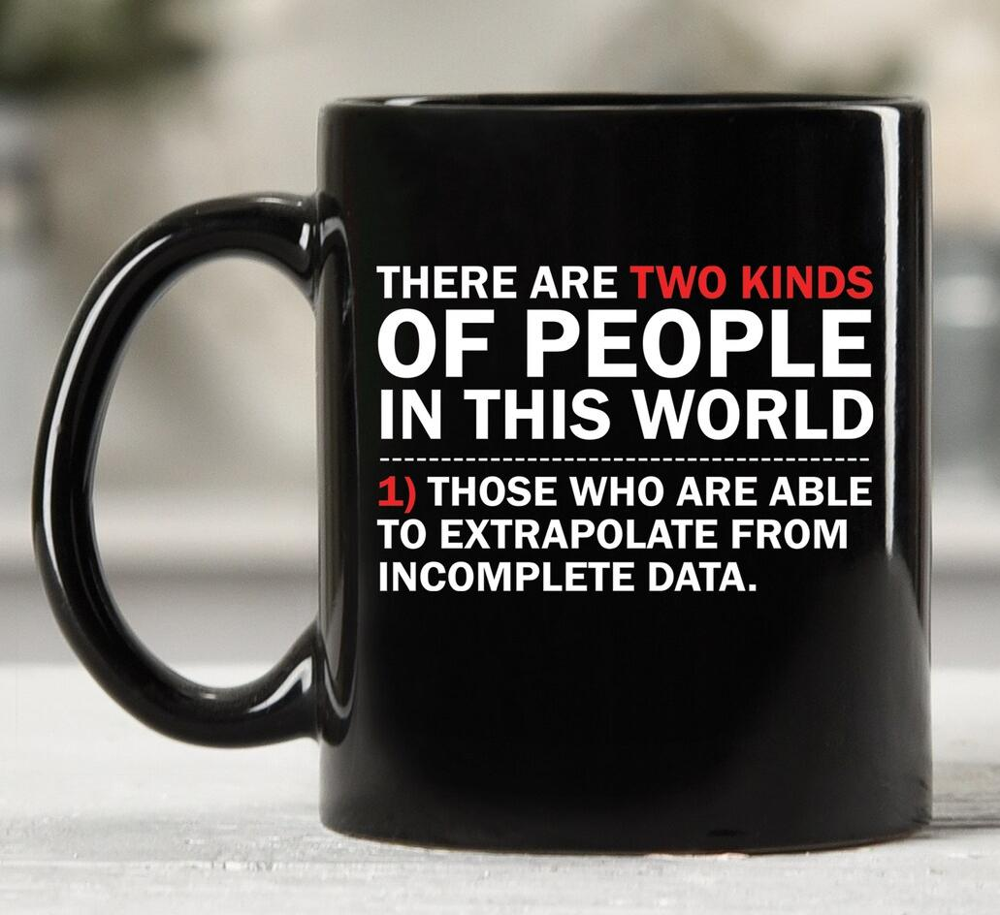
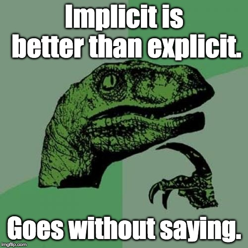

# A tibble: 317 × 79
artist track date.entered wk1 wk2 wk3 wk4 wk5 wk6 wk7 wk8
<chr> <chr> <date> <dbl> <dbl> <dbl> <dbl> <dbl> <dbl> <dbl> <dbl>
1 2 Pac Baby… 2000-02-26 87 82 72 77 87 94 99 NA
2 2Ge+her The … 2000-09-02 91 87 92 NA NA NA NA NA
3 3 Doors Do… Kryp… 2000-04-08 81 70 68 67 66 57 54 53
4 3 Doors Do… Loser 2000-10-21 76 76 72 69 67 65 55 59
5 504 Boyz Wobb… 2000-04-15 57 34 25 17 17 31 36 49
# ℹ 312 more rows
# ℹ 68 more variables: wk9 <dbl>, wk10 <dbl>, wk11 <dbl>, wk12 <dbl>,
# wk13 <dbl>, wk14 <dbl>, wk15 <dbl>, wk16 <dbl>, wk17 <dbl>, wk18 <dbl>,
# wk19 <dbl>, wk20 <dbl>, wk21 <dbl>, wk22 <dbl>, wk23 <dbl>, wk24 <dbl>,
# wk25 <dbl>, wk26 <dbl>, wk27 <dbl>, wk28 <dbl>, wk29 <dbl>, wk30 <dbl>,
# wk31 <dbl>, wk32 <dbl>, wk33 <dbl>, wk34 <dbl>, wk35 <dbl>, wk36 <dbl>,
# wk37 <dbl>, wk38 <dbl>, wk39 <dbl>, wk40 <dbl>, wk41 <dbl>, wk42 <dbl>, …Tidying and Reshaping Data
Pivot, Missingness, and Strings
Agenda
Reinforcing tidy data
Long vs wide data
pivot_functions for reshapingMissingness
Working with string columns
Tidy Data
Tidy Data - Recall Our Definitions
A variable is some sort of quality, quantity or property of the data
Variables are comprised of values which are specific instances or measures of a variable
An observation is a set of measurements under similar conditions, it can be thought of as a unique set of values specific to those conditions
Tabular data takes a set of values each associated with a variable and an observation and gives a rectangular structure
Our goal is to make data tidy wherein each value is its own cell, each variable is its own column, each observation is its own row
Tidy Data - Our Example
- We spend much time coercing our material into tibbles (or data frames) as they enforce tidy-ness

- We also know many ways to access our data including…
. . .
`$` `[[ ]]` `[ ]` `select()` `pick()`Tidy Data - Why It Matters

Tidy Data - Why It Matters
- Flexibility is good but consistency is better, especially for programming

Tidy Data - Why It Matters
- The columns-as-variables lets the vectorized nature of data frames and tibbles in R shine

- It also enables the tidy selection and data masking of the tidyverse (for better or worse)
Tidy Data - Meanwhile in the Real World…
- Data is messy, even messier than what we’ve been working with

- It’s not enough to isolate and transform, we may need to pivot
Wide vs Long Data
Wide vs Long - Wide Data
- Wide data can be thought of as multiple univariate data sets

Wide vs Long - Wide Data
- Which gets very complicated with multivariate data…

Wide vs Long - Wide Data
- …or time series data like the
billboarddataset
Wide vs Long - Wide Data
Wide data sets are defined by having actual data
in their column names
In
billboardeach observation is a song with the first three variables describing the songBut the other 76 (!) columns describe the rank with the
column names describing the
week it entered

Wide vs Long - Long Data
- Long data instead has no values in column names

Wide vs Long - Long Data
- It also does a much better job handling missing data

Wide vs Long - So Why Wide?
R in general prefers long data to wide
Better for vectorization and formula formatting
i.e.yvar ~ xvar_1 + xvar_2 + ...Mandatory for time series data in longitudinal or survival designs
Wide data is still common
Well supported in other stats programs for things like 2-way or repeated measures ANOVA
Is often more intuitive for data collection . . .
Thus it’s up to you to make things
tidyr
Reshaping with Pivot
Pivot - The tidyr Package
tidyris how the tidyverse makes data tidy with 5 categories:Pivoting to convert data between wide and long
Rectangling for dealing with nested lists
Nesting to embed data frames within data frames
Separating and uniting character data columns
Dealing with
NAas missingness
Our focus is on 1 and 5 and a bit of 4
Pivot - What it Looks Like

Pivot - A History
Originally,
tidyrhad functions calledspread()andgather()but…The names were unintuitive
The arguments were hard to remember
Function support for transforming was limited in scope
In a later update,
pivot_wider()andpivot_longer()were added to supersedespread()andgather()While
spread()andgather()still function withintidyrand can be used, our focus is on thepivot_family
Pivot - Some Long Covid data
- Today we have some case and and death data on COVID-19 by state and day from the NY times called
cv19
print(cv19, n=7)# A tibble: 61,942 × 4
date state cases deaths
<date> <chr> <dbl> <dbl>
1 2020-01-21 Washington 1 0
2 2020-01-22 Washington 1 0
3 2020-01-23 Washington 1 0
4 2020-01-24 Illinois 1 0
5 2020-01-24 Washington 1 0
6 2020-01-25 California 1 0
7 2020-01-25 Illinois 1 0
# ℹ 61,935 more rows- Pretty long but could be longer
Pivot - Using pivot_longer()
Let’s get a longer form where:
Cases and death values are in the
valuecolumnCases and death indicators in the
namecolumn.
# A tibble: 5 × 4
date state name value
<date> <chr> <chr> <dbl>
1 2020-01-21 Washington cases 1
2 2020-01-21 Washington deaths 0
3 2020-01-22 Washington cases 1
4 2020-01-22 Washington deaths 0
5 2020-01-23 Washington cases 1Pivot - Using pivot_longer()
The
colsargument indicates the variables that will be cast tovaluewhile the column names populatename;colsalso understands tidy selection e.g.starts_with()You can rename the
valuevariable withvalues_toand renamenamewithnames_toCheck the reference for other useful arguments like
drop_na
billboard |>
pivot_longer(
cols = starts_with("wk"),
names_to = "week",
values_to = "rank")Pivot - R Loves Long Data
- Long vectorized data is ideal for packages like
ggplot2
ggplot(cv19_long, aes(x=date, y = value)) +
geom_line(aes(group = state)) +
labs(title = "Covid Cases and Deaths") +
facet_wrap(~ name, scales = 'free')
Pivot - Using pivot_wider()
pivot_wider()does the inverse, adding columns and reducing rowsNHANES is a good example since each row is an
examyear
# A tibble: 30 × 4
# Groups: exam, sex [6]
exam sex race_ethnicity bp_sys_mmhg
<fct> <fct> <fct> <dbl>
1 2013 Female Non-Hispanic White 121.
2 2013 Female Non-Hispanic Black 125.
3 2013 Female Non-Hispanic Asian 118.
4 2013 Female Hispanic 119.
5 2013 Female Other race 119.
6 2013 Male Non-Hispanic White 123.
7 2013 Male Non-Hispanic Black 129.
8 2013 Male Non-Hispanic Asian 123.
9 2013 Male Hispanic 124.
10 2013 Male Other race 123.
# ℹ 20 more rowsPivot - Using pivot_wider()
pivot_wider()can givesys_bp_mmhgcolumns for eachexamyear
nhanes_wide <- nhanes_long |>
pivot_wider(values_from = bp_sys_mmhg, #<<
names_from = exam, names_prefix = "exam_") #<<
nhanes_wide# A tibble: 10 × 5
# Groups: sex [2]
sex race_ethnicity exam_2013 exam_2015 exam_2017
<fct> <fct> <dbl> <dbl> <dbl>
1 Female Non-Hispanic White 121. 124. 125.
2 Female Non-Hispanic Black 125. 126. 131.
3 Female Non-Hispanic Asian 118. 119. 123.
4 Female Hispanic 119. 123. 123.
5 Female Other race 119. 122. 123.
6 Male Non-Hispanic White 123. 126. 127.
7 Male Non-Hispanic Black 129. 131. 132.
8 Male Non-Hispanic Asian 123. 123. 124.
9 Male Hispanic 124. 127. 126.
10 Male Other race 123. 125. 126.Pivot - R Loves Wide Data Too
#gt works well with wide data
#In fact, we want it even wider!
gt(nhanes_wide) |>
fmt_number(columns = starts_with("exam"),
decimals = 1) |>
cols_align(columns = "race_ethnicity",
align = "left")| race_ethnicity | exam_2013 | exam_2015 | exam_2017 |
|---|---|---|---|
| Female | |||
| Non-Hispanic White | 121.2 | 123.6 | 124.6 |
| Non-Hispanic Black | 125.2 | 126.4 | 131.3 |
| Non-Hispanic Asian | 118.0 | 119.2 | 123.5 |
| Hispanic | 119.4 | 123.2 | 122.9 |
| Other race | 118.8 | 121.7 | 122.6 |
| Male | |||
| Non-Hispanic White | 123.4 | 125.9 | 127.0 |
| Non-Hispanic Black | 128.5 | 130.5 | 131.6 |
| Non-Hispanic Asian | 122.7 | 122.7 | 124.4 |
| Hispanic | 124.2 | 126.7 | 126.0 |
| Other race | 123.0 | 125.0 | 125.7 |
Pivot - Arguments in pivot_wider()
Arguments follow similar conventions as in
pivot_longer()names_fromdefines the columns which provide the name of the output column; usenames_prefixto annotate the new columnsvalues_fromindicates the column which gives the cell valuesid_colsdefaults to all other columns but is what defines a unique observation in the wide data set
names_fromcan also accept vectors for even wider data
Pivot - Even pivot_wider()er
- Create the new wide columns from both
sexandexamyear
nhanes_wider <- nhanes_long |>
pivot_wider(names_from = c(sex, exam), names_sort = TRUE,
values_from = bp_sys_mmhg)
nhanes_wider# A tibble: 5 × 7
race_ethnicity Female_2013 Female_2015 Female_2017 Male_2013 Male_2015
<fct> <dbl> <dbl> <dbl> <dbl> <dbl>
1 Non-Hispanic White 121. 124. 125. 123. 126.
2 Non-Hispanic Black 125. 126. 131. 129. 131.
3 Non-Hispanic Asian 118. 119. 123. 123. 123.
4 Hispanic 119. 123. 123. 124. 127.
5 Other race 119. 122. 123. 123. 125.
# ℹ 1 more variable: Male_2017 <dbl>- I’d discourage passing vectors to
values_from
Pivot - Better gt Tables with Wide Data
- We can use our
gtskills to make a great table
gt(nhanes_wider, rowname_col = "race_ethnicity") |>
cols_align(columns = "race_ethnicity", "left") |>
fmt_number(columns = !starts_with('race'), decimals = 1) |>
tab_spanner_delim(columns = !starts_with('race'), delim = '_') |>
tab_stubhead("Race") | Race | Female | Male | ||||
|---|---|---|---|---|---|---|
| 2013 | 2015 | 2017 | 2013 | 2015 | 2017 | |
| Non-Hispanic White | 121.2 | 123.6 | 124.6 | 123.4 | 125.9 | 127.0 |
| Non-Hispanic Black | 125.2 | 126.4 | 131.3 | 128.5 | 130.5 | 131.6 |
| Non-Hispanic Asian | 118.0 | 119.2 | 123.5 | 122.7 | 122.7 | 124.4 |
| Hispanic | 119.4 | 123.2 | 122.9 | 124.2 | 126.7 | 126.0 |
| Other race | 118.8 | 121.7 | 122.6 | 123.0 | 125.0 | 125.7 |
Pivot - And Back with pivot_longer()
- Our wide columns are named
[sex value]_[exam value]so usenames_sep = "_"and combine with tidy selection
pivot_longer(nhanes_wider, cols = -race_ethnicity, values_to = "bp_sys_mmhg_once_more",
names_to = c('sex', 'exam'), names_sep = '_')# A tibble: 30 × 4
race_ethnicity sex exam bp_sys_mmhg_once_more
<fct> <chr> <chr> <dbl>
1 Non-Hispanic White Female 2013 121.
2 Non-Hispanic White Female 2015 124.
3 Non-Hispanic White Female 2017 125.
4 Non-Hispanic White Male 2013 123.
5 Non-Hispanic White Male 2015 126.
6 Non-Hispanic White Male 2017 127.
7 Non-Hispanic Black Female 2013 125.
8 Non-Hispanic Black Female 2015 126.
9 Non-Hispanic Black Female 2017 131.
10 Non-Hispanic Black Male 2013 129.
# ℹ 20 more rowsMissingness with tidyr
Missingness - More than mutate()

Previously, we saw how
mutate()can be used on whole columns to assign missingness vector-wise viana_if()tidyroffers many additional options for coercing to and fromNAvalues either implicitly or explicitlyIt can also provide some imputation capacity
Missingness - Back to the Billboard
billboardhas many missing values; no complete data is found anywhere (caps at 65 weeks)
bb_long <- billboard |>
pivot_longer(
cols = starts_with("wk"),
names_to = "week",
values_to = "rank")- The
drop_naargument inpivot_longer()could drop any rows withNAin our newvaluecolumn…
Missingness - Back to the Billboard
- Otherwise
ranknow has a huge number of missing values (>75%)
# A tibble: 24,092 × 5
artist track date.entered week rank
<chr> <chr> <date> <chr> <dbl>
1 2 Pac Baby Don't Cry (Keep... 2000-02-26 wk1 87
2 2 Pac Baby Don't Cry (Keep... 2000-02-26 wk2 82
3 2 Pac Baby Don't Cry (Keep... 2000-02-26 wk3 72
4 2 Pac Baby Don't Cry (Keep... 2000-02-26 wk4 77
5 2 Pac Baby Don't Cry (Keep... 2000-02-26 wk5 87
6 2 Pac Baby Don't Cry (Keep... 2000-02-26 wk6 94
7 2 Pac Baby Don't Cry (Keep... 2000-02-26 wk7 99
8 2 Pac Baby Don't Cry (Keep... 2000-02-26 wk8 NA
9 2 Pac Baby Don't Cry (Keep... 2000-02-26 wk9 NA
10 2 Pac Baby Don't Cry (Keep... 2000-02-26 wk10 NA
# ℹ 24,082 more rowsmean(is.na(bb_long$rank))[1] 0.7797194Missingness - Dealing with Explicit NAs
- We can replace
NAwithreplace_na(), the inverse ofna_if()
replace_na(bb_long, replace = list(rank = -888))# A tibble: 24,092 × 5
artist track date.entered week rank
<chr> <chr> <date> <chr> <dbl>
1 2 Pac Baby Don't Cry (Keep... 2000-02-26 wk1 87
2 2 Pac Baby Don't Cry (Keep... 2000-02-26 wk2 82
3 2 Pac Baby Don't Cry (Keep... 2000-02-26 wk3 72
4 2 Pac Baby Don't Cry (Keep... 2000-02-26 wk4 77
5 2 Pac Baby Don't Cry (Keep... 2000-02-26 wk5 87
6 2 Pac Baby Don't Cry (Keep... 2000-02-26 wk6 94
7 2 Pac Baby Don't Cry (Keep... 2000-02-26 wk7 99
8 2 Pac Baby Don't Cry (Keep... 2000-02-26 wk8 -888
9 2 Pac Baby Don't Cry (Keep... 2000-02-26 wk9 -888
10 2 Pac Baby Don't Cry (Keep... 2000-02-26 wk10 -888
# ℹ 24,082 more rowsreplaceneeds to be a list if data is a data frame
Missingness - Dealing with Explicit NAs
- Drop rows with
NApostpivot_longer()withdrop_na()
drop_na(bb_long, c(rank))# A tibble: 5,307 × 5
artist track date.entered week rank
<chr> <chr> <date> <chr> <dbl>
1 2 Pac Baby Don't Cry (Keep... 2000-02-26 wk1 87
2 2 Pac Baby Don't Cry (Keep... 2000-02-26 wk2 82
3 2 Pac Baby Don't Cry (Keep... 2000-02-26 wk3 72
4 2 Pac Baby Don't Cry (Keep... 2000-02-26 wk4 77
5 2 Pac Baby Don't Cry (Keep... 2000-02-26 wk5 87
6 2 Pac Baby Don't Cry (Keep... 2000-02-26 wk6 94
7 2 Pac Baby Don't Cry (Keep... 2000-02-26 wk7 99
8 2Ge+her The Hardest Part Of ... 2000-09-02 wk1 91
9 2Ge+her The Hardest Part Of ... 2000-09-02 wk2 87
10 2Ge+her The Hardest Part Of ... 2000-09-02 wk3 92
# ℹ 5,297 more rows- These will both prove useful later with joins
Missingness - Working with Implicit NA
Using
drop_na()leads to implicitNAs where the absence of an occurrence implies anNAwould otherwise existThe
complete()function makes these implicitNAs explicit by completing a data frame with missing combinations of data

Missingness - Working with Implicit NA
- This returns us back (almost) to the original
bb_long
drop_na(bb_long, c(rank)) |> complete(nesting(artist, track, date.entered), week) |> arrange(artist, track, week)# A tibble: 20,605 × 5
artist track date.entered week rank
<chr> <chr> <date> <chr> <dbl>
1 2 Pac Baby Don't Cry (Keep... 2000-02-26 wk1 87
2 2 Pac Baby Don't Cry (Keep... 2000-02-26 wk10 NA
3 2 Pac Baby Don't Cry (Keep... 2000-02-26 wk11 NA
4 2 Pac Baby Don't Cry (Keep... 2000-02-26 wk12 NA
5 2 Pac Baby Don't Cry (Keep... 2000-02-26 wk13 NA
6 2 Pac Baby Don't Cry (Keep... 2000-02-26 wk14 NA
7 2 Pac Baby Don't Cry (Keep... 2000-02-26 wk15 NA
8 2 Pac Baby Don't Cry (Keep... 2000-02-26 wk16 NA
9 2 Pac Baby Don't Cry (Keep... 2000-02-26 wk17 NA
10 2 Pac Baby Don't Cry (Keep... 2000-02-26 wk18 NA
# ℹ 20,595 more rowsMissingness - Imputation with fill()
fill()can be used to impute and overwriteNAmissing values based on the previous or next entryUsing the previous entry is Last Observation Carried Forward
Using the next value is Next Observation Carried Backward
Very useful when dealing with “jagged” data e.g. common with REDCap
Warning
Use imputation with caution and consideration!
Missingness - Imputation with fill()
- Using
.direction = "down"to do LOCF
sales <- tibble::tribble(
~quarter, ~year, ~sales,
"Q1", 2000, 66013,
"Q2", NA, 69182,
"Q3", NA, 53175,
"Q4", NA, 21001,
"Q1", 2001, 46036,
"Q2", NA, 58842,
"Q3", NA, 44568,
"Q4", NA, 50197,
"Q1", 2002, 39113,
"Q2", NA, 41668,
"Q3", NA, 30144,
"Q4", NA, 52897
)sales |> fill(year, .direction = "down")# A tibble: 12 × 3
quarter year sales
<chr> <dbl> <dbl>
1 Q1 2000 66013
2 Q2 2000 69182
3 Q3 2000 53175
4 Q4 2000 21001
5 Q1 2001 46036
6 Q2 2001 58842
7 Q3 2001 44568
8 Q4 2001 50197
9 Q1 2002 39113
10 Q2 2002 41668
11 Q3 2002 30144
12 Q4 2002 52897String Vectors
Strings - A Brief Intro
Many packages work with string data, most notably
stringr
from the tidyversetidyrspecifically handles vector-wise applications of character data in a data frameunite()combines multiple character columns into a singleThe
separate_family splits a single column into multiple columns or rows i.e. too much data is in a single column
Don’t forget about coercion!
Strings - Combine with unite()
- A convenience function to
pastecolumns together with asep
bb_long |>
unite("wk_rank", c(week, rank), sep = "_", #<<
remove = FALSE, na.rm = TRUE)# A tibble: 24,092 × 6
artist track date.entered wk_rank week rank
<chr> <chr> <date> <chr> <chr> <dbl>
1 2 Pac Baby Don't Cry (Keep... 2000-02-26 wk1_87 wk1 87
2 2 Pac Baby Don't Cry (Keep... 2000-02-26 wk2_82 wk2 82
3 2 Pac Baby Don't Cry (Keep... 2000-02-26 wk3_72 wk3 72
4 2 Pac Baby Don't Cry (Keep... 2000-02-26 wk4_77 wk4 77
5 2 Pac Baby Don't Cry (Keep... 2000-02-26 wk5_87 wk5 87
6 2 Pac Baby Don't Cry (Keep... 2000-02-26 wk6_94 wk6 94
7 2 Pac Baby Don't Cry (Keep... 2000-02-26 wk7_99 wk7 99
8 2 Pac Baby Don't Cry (Keep... 2000-02-26 wk8 wk8 NA
9 2 Pac Baby Don't Cry (Keep... 2000-02-26 wk9 wk9 NA
10 2 Pac Baby Don't Cry (Keep... 2000-02-26 wk10 wk10 NA
# ℹ 24,082 more rowsStrings - Combine with unite()
removedrops columns after pasting whilena.rmwill keepNA
bb_long |>
unite("wk_rank", c(week, rank), sep = "_",
remove = TRUE, na.rm = FALSE) #<< Check the defaults!# A tibble: 24,092 × 4
artist track date.entered wk_rank
<chr> <chr> <date> <chr>
1 2 Pac Baby Don't Cry (Keep... 2000-02-26 wk1_87
2 2 Pac Baby Don't Cry (Keep... 2000-02-26 wk2_82
3 2 Pac Baby Don't Cry (Keep... 2000-02-26 wk3_72
4 2 Pac Baby Don't Cry (Keep... 2000-02-26 wk4_77
5 2 Pac Baby Don't Cry (Keep... 2000-02-26 wk5_87
6 2 Pac Baby Don't Cry (Keep... 2000-02-26 wk6_94
7 2 Pac Baby Don't Cry (Keep... 2000-02-26 wk7_99
8 2 Pac Baby Don't Cry (Keep... 2000-02-26 wk8_NA
9 2 Pac Baby Don't Cry (Keep... 2000-02-26 wk9_NA
10 2 Pac Baby Don't Cry (Keep... 2000-02-26 wk10_NA
# ℹ 24,082 more rowsStrings - separate_ as the Complement
The
separate_family has many more optionsseparate_wider_splits one column into multiple columnsseparate_longer_splits a character column into multiple rows
How you split also matters
separate_*_delim()uses delimiters likeunite()separate_*_position()splits on fixed positions
separate_wider_regex()uses regular expressions (next time)Like
pivot_, these have supersededseparate()andextract()
Strings - separate_longer_ is Less Common
- Most useful when collaborators have multiple uneven observations in a single column
dat <- tibble(id = 1:4, dat_col = c("x", "x y", "x y z", NA))
dat# A tibble: 4 × 2
id dat_col
<int> <chr>
1 1 x
2 2 x y
3 3 x y z
4 4 <NA> Strings - separate_wider_
- Great when multiple variables exist in a single column
bb_long |>
separate_wider_delim(cols = date.entered, delim = "-",
names = c("year", "month", "day"))# A tibble: 24,092 × 7
artist track year month day week rank
<chr> <chr> <chr> <chr> <chr> <chr> <dbl>
1 2 Pac Baby Don't Cry (Keep... 2000 02 26 wk1 87
2 2 Pac Baby Don't Cry (Keep... 2000 02 26 wk2 82
3 2 Pac Baby Don't Cry (Keep... 2000 02 26 wk3 72
4 2 Pac Baby Don't Cry (Keep... 2000 02 26 wk4 77
5 2 Pac Baby Don't Cry (Keep... 2000 02 26 wk5 87
6 2 Pac Baby Don't Cry (Keep... 2000 02 26 wk6 94
7 2 Pac Baby Don't Cry (Keep... 2000 02 26 wk7 99
8 2 Pac Baby Don't Cry (Keep... 2000 02 26 wk8 NA
9 2 Pac Baby Don't Cry (Keep... 2000 02 26 wk9 NA
10 2 Pac Baby Don't Cry (Keep... 2000 02 26 wk10 NA
# ℹ 24,082 more rowsStrings - separate_wider_
- But be mindful of coercion if you need to
unite()later
bb_long |>
separate_wider_delim(cols = date.entered, delim = "-",
names = c("year", "month", "day"), cols_remove = FALSE) |>
unite("new_date", c(year, month, day), sep = "-", remove = FALSE) |> select(-c(artist, track))# A tibble: 24,092 × 7
new_date year month day date.entered week rank
<chr> <chr> <chr> <chr> <date> <chr> <dbl>
1 2000-02-26 2000 02 26 2000-02-26 wk1 87
2 2000-02-26 2000 02 26 2000-02-26 wk2 82
3 2000-02-26 2000 02 26 2000-02-26 wk3 72
4 2000-02-26 2000 02 26 2000-02-26 wk4 77
5 2000-02-26 2000 02 26 2000-02-26 wk5 87
6 2000-02-26 2000 02 26 2000-02-26 wk6 94
7 2000-02-26 2000 02 26 2000-02-26 wk7 99
8 2000-02-26 2000 02 26 2000-02-26 wk8 NA
9 2000-02-26 2000 02 26 2000-02-26 wk9 NA
10 2000-02-26 2000 02 26 2000-02-26 wk10 NA
# ℹ 24,082 more rowsLearning more
As always, cheatsheets are available on the tidyverse website(https://rstudio.cloud/learn/cheat-sheets){.external target=“_blank”}
Package websites:
This vignette is dedicated to the
pivot_wider()andpivot_longer()functions.Next time, more on working with characters and extending
separate_